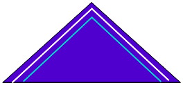
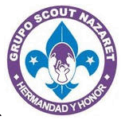

Volver | Distrito Paraguaná - Región Falcón |
Dirección: Parque Metropolitano "Generalísimo y Almirante Fco. de Miranda", Urb. Jorge Hernández, Avenida Dr. Portillo. Punto Fijo
Municipio: Carirubana
Estado: Falcón
Día y hora de reuniones: Sábados de 2:00 a 4:00 pm
Jefe de Grupo: Jaro Marval
Teléfonos: 0424-6488489
Dirección de Correos: nazaret@scoutsfalcon.org
Institución Patrocinadora:Parque Metropolitano "Generalísimo y Almirante Fco. de Miranda"
 